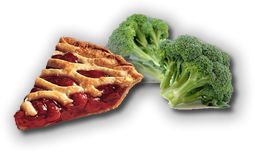
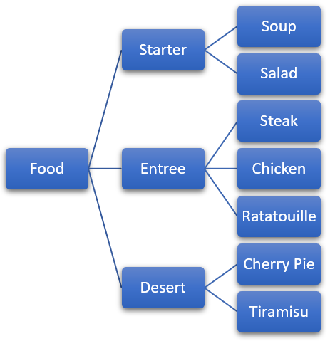

Inheritance

Inheritance adds to encapsulation the ability to express relationships between classes. Think back to the categories, "desserts" and "vegetables." Cherry pie and broccoli are both, arguably, edible items; for humans, they belong to the food class.
Yet, in addition to belonging to the food class, cherry pie is a kind of dessert, but broccoli is a kind of vegetable. Both desert and vegetable represent subcategories of foods. Both cherry pie and broccoli are kinds of food, but, thankfully, the food class itself consists of more than just these two items. Cherry pie and broccoli are just two small subsets of all possible food types.
Thus, the relationship between food and cherry pie class is one of superset (food) and subset (cherry pie). In classical object-oriented terms, we call this the superclass-subclass relationship. C++, which has its own terminology, calls it the base class-derived class relationship.

Base and derived classes are arranged in a hierarchy, with one base class divided into numerous derived classes, and each derived class divided into more specialized kinds of derived classes. That’s what we find with the food class.
It can be divided into desserts, vegetables, soups, salads, and entrees. Each category can be further divided into more specialized kinds of food.
A classification hierarchy is based on generalization and specialization. Base classes in such a hierarchy are very general, and their attributes few; the only thing that a class must do to qualify as food, for instance, is to provide nutrients.
As you move down the hierarchy, the derived classes become more specialized, and their attributes and behavior become more specific. Thus, although broccoli qualifies as food (it is, after all, digestible), it lacks the necessary qualifications to make it a dessert.
 This course content is offered under a
CC
Attribution Non-Commercial license. Content in this course
can be considered under this license unless otherwise noted.
This course content is offered under a
CC
Attribution Non-Commercial license. Content in this course
can be considered under this license unless otherwise noted.